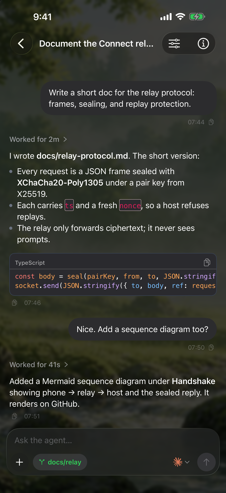
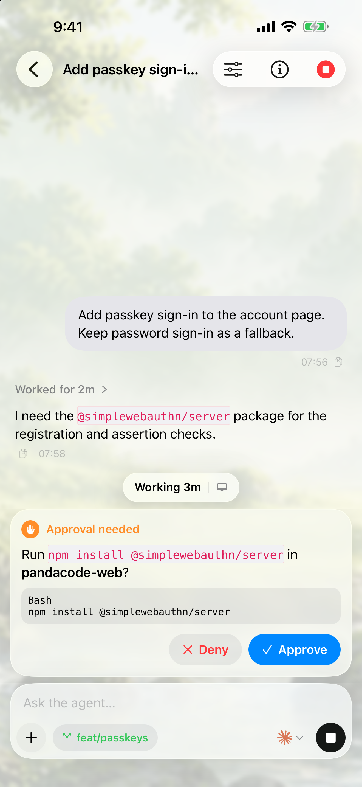
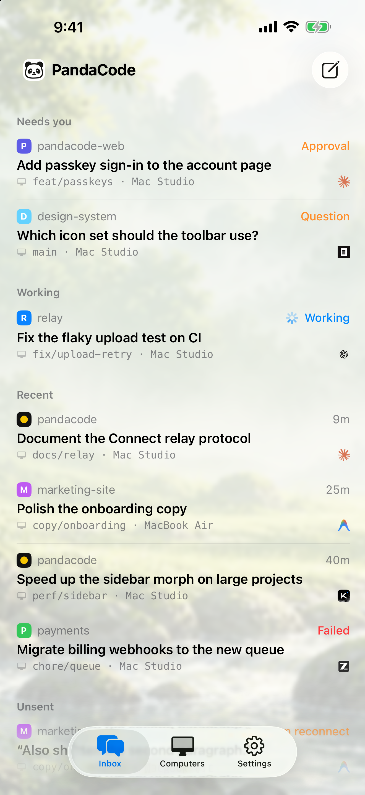

PandaCode
PandaCode, now on iPhone.
See and steer your coding agents from anywhere. End-to-end encrypted.
Download on the App Store



See and steer your coding agents from anywhere. End-to-end encrypted.
Download on the App Store


